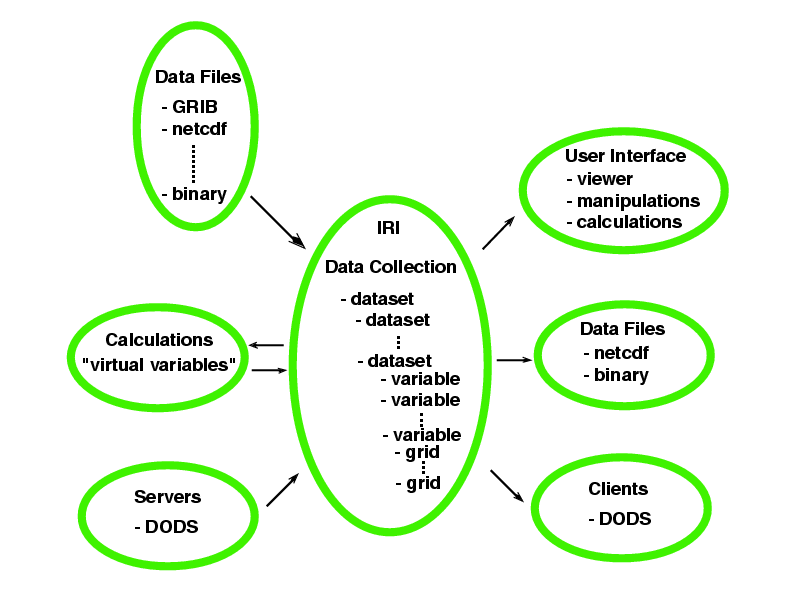

Ingrid reads data from a variety of sources into a common data model: nested datasets containing multidimensional dependent variables, with common independent variables indicating covariance, and attributes which contain metadata. A variety of output formats, analysis filters, web pages and images are then generated from that data.
